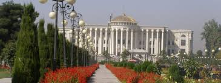
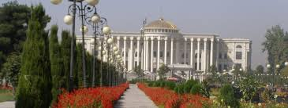
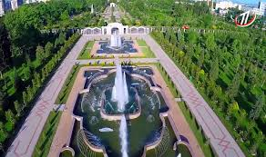
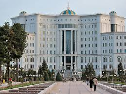
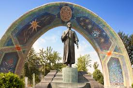
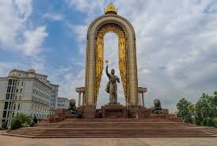

| HOME | HISTORY | PEOPLE | CULTURE | CITIES | GALLERY | AUTHORS |
 

Dushanbe — is the capital and largest city of Tajikistan. Dushanbe means Monday in the Tajik language. It was so named because it grew from a village that originally had a popular market on Mondays. Until 1929, the city was known in Russian as Dyushambe, and from 1929 to 1961 as Stalinabad. As of 2016, Dushanbe had a population of 800,000.
   